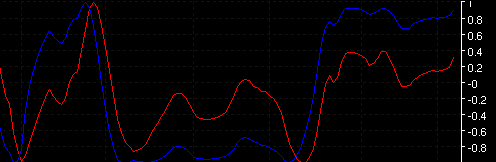

Sine Wave - SINWAV
Parameters:
- Sine Color - plot color
- Lead Color - plot color
- Sine Line Type - plot line type
- Lead Line Type - plot line type
- Label - The text to identify the plot
Description:
This is another John Ehler's indicator. There are no configurable inputs. The data series used is (h+l)/2. When the market is in a cycle mode (very rare) the indicator takes on a distinctive sine wave pattern andgenerates trading signals. When the market is in a trending mode the lines tend to run in a parallel pattern in the direction of the trend. More information can be found in Ehler's book: Rocket Science for
Traders.
Formula Reference:
| Syntax |
SINWAV() |
| Function |
Sine Wave |
| Example |
SINWAV() |